Конечный автомат — абстрактная модель, типичный паттерн в разработке компиляторов и не только. Реализовать автомат можно в любом стиле программирования — процедурном, объектно-ориентированном или функциональном.
Будучи абстрактной моделью, автомат в коде или в схемах может стать чем угодно. Ниже показан пример диаграммы состояний для автомата, моделирующего выключатель:
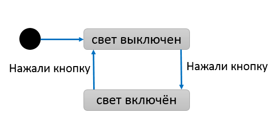
У этого автомата есть:
Чуть более сложный автомат для разбора числа с плавающей точкой показан ниже:
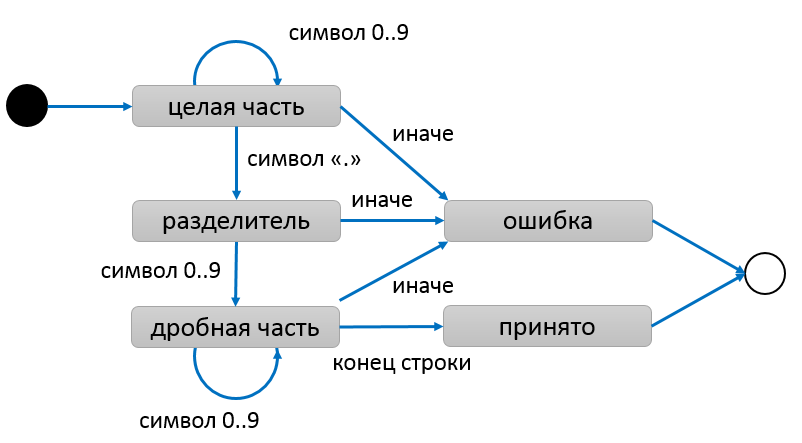
Оба этих автомата являются детерминированными, потому что входной символ или событие однозначно определяет переход, и нет “самопроизвольных” переходов при отсутствии события. Если эти условия не соблюдаются, автомат становится недетерминированным. Также автомат не является детерминированным, если он использует дополнительную память (например, стек ранее накопленных символов) для принятия решения о переходе.
Детерминированный конечный автомат может разобрать строку в один проход из начала в конец, не используя дополнительной памяти кроме заранее заданных таблицы состояний и таблицы переходов между состояниями по событиям. В этой предсказуемости и линейной сложности разбора строки его главное преимущество. Например, в конце разбора строки автомат лексического анализатора приходит в состояние accepted либо в состояние error, что означает успешный или неуспешный разбор строки на токены соответственно.
Любой детерминированный конечный автомат имеет эквивалентное регулярное выражение, и эквивалетный язык регулярной грамматики, и наоборот. По сути это три разных формы представления одной сущности.
Существует формальный алгоритм превращения недетерминированного автомата без дополнительной памяти в детерминированный. Кстати, подобные алгоритмы используют реализации библиотек регулярных выражений: например, для выражения "([a-z])|([a-z]\(\))" легко составить недетерминированный автомат с неоднозначными или пустыми переходами, а алгоритм позволяет превратить его в детерминированный.
В промышленных библиотеках регулярных выражений многие операции избыточны и лишь для удобства. Если убрать лишнее и оставить минимум, достаточный для создания произвольных регулярных выражений, то останутся три операции:
Мы построим детерминированный конечный автомат на основе заданного регулярного выражения. Пусть дано выражение "xy* (x | y*) | ab (x | y*) | (x | a*) (x | y*)", построим для него диаграмму автомата. Для наглядности обозначение начальных и конечных состояний убрано — мы считаем, что любой неожиданный символ переводит в состояние ошибки.
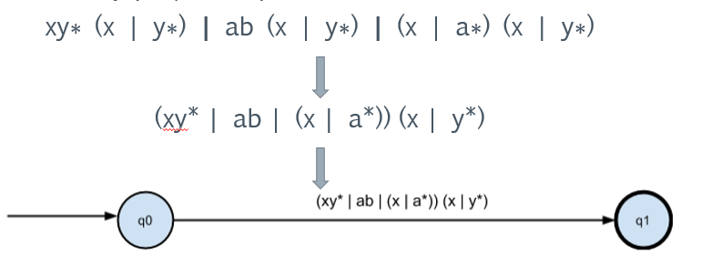
Преобразуем конкатенацию с (x | y*):
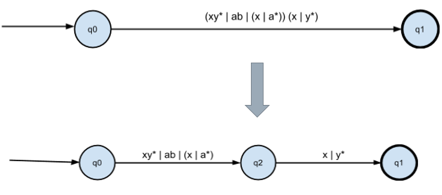
Преобразуем объединение:
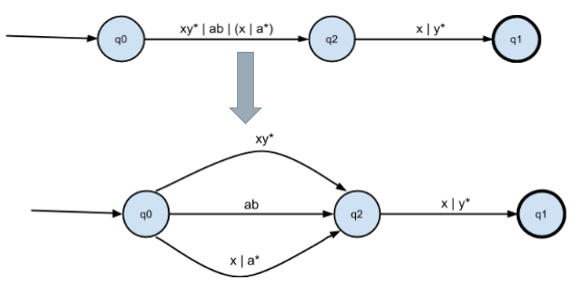
Преобразуем конкатенацию:
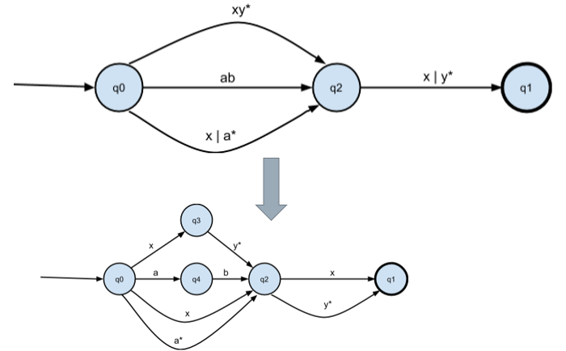
Получаем промежуточный εНКА, т.е. НКА с “пустыми” — или “самопроизвольными” — переходами:
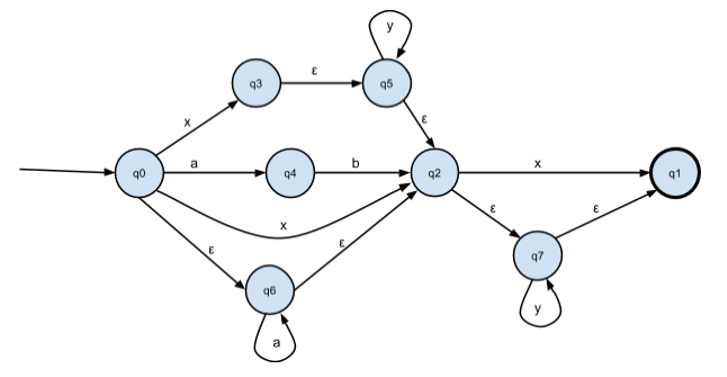
Убираем переходы по пустой цепочке ε:
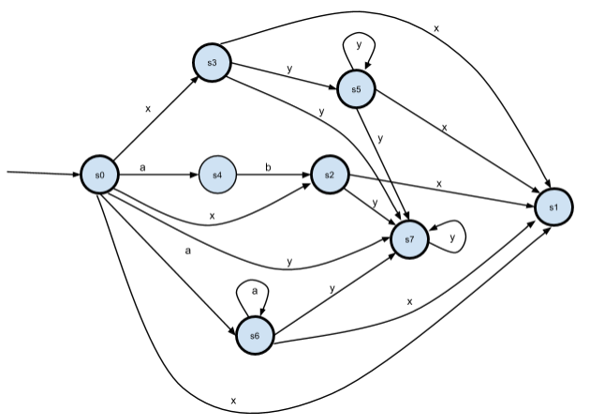
Теперь состояния s3 и s5 оказались эквивалентны. Уберём s5, переименуем s6->s5, s7->s6.
Убираем неопределённые переходы из НКА:
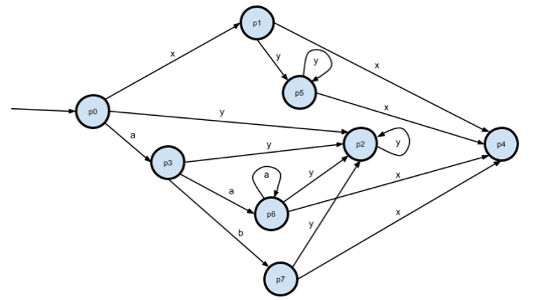
Теперь p1 и p5 эквивалентны. Уберём p5, переименуем p6->p5, p7->p6.
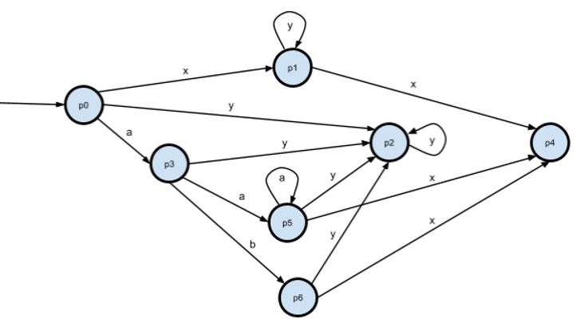
Полученный автомат эквивалентен выражению "xy* (x | y*) | ab (x | y*) | (x | a*) (x | y*)".
Существует классификация программ по принципам их работы. Один из вариантов – это классификация Д. Харела, которая делит программы на три вида
Автоматы применяют в трансформирующих системах, особенно связанных с обработкой текста. Примером подобной системы является интерпретатор, компилятор, шаблонизатор, или же любой простой скрипт для обработки запроса к серверу:
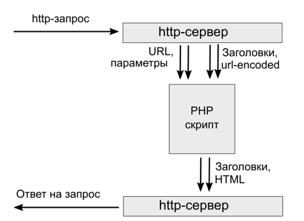